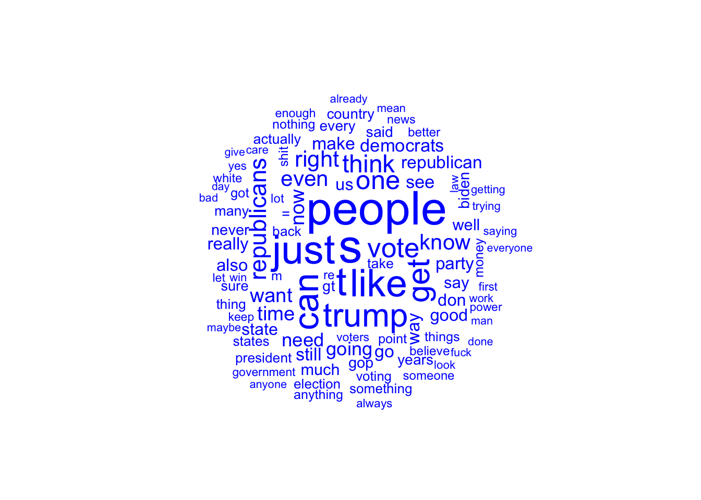

Code
library(tidyverse)
library(RedditExtractoR)
library(syuzhet)
library(rvest)
library(quanteda)
library(quanteda.textplots)
library(polite)
library(cleanNLP)
knitr::opts_chunk$set(echo = TRUE)library(tidyverse)
library(RedditExtractoR)
library(syuzhet)
library(rvest)
library(quanteda)
library(quanteda.textplots)
library(polite)
library(cleanNLP)
knitr::opts_chunk$set(echo = TRUE)Compare how two subreddits (/r/republicans and /r/democrats) discuss particular political issues. With this it may be difficult because the democrat subreddit has a far superior user base.
I think I will have to actually scrape reddit for the comments at least because I cannot find the command to get comments of posts. I am able to get the titles of posts and how many comments they have, but I want to analze the discourse of the comments as well.
Should I do something with /r/conspiracy?
If I choose to look into rhetoric on the ukraine/russian war, I would have to pick different subreddits because there were little to no posts in subreddit titles.
What words do they tend to use over the opposition?
Below I am pulling data from the two subreddits below. As of now, these two subreddits will be my focus for analysis.
red <- find_thread_urls(subreddit = "republicans", sort_by = "top", period = "month")parsing URLs on page 1...Warning in file(con, "r"): cannot open URL 'https://www.reddit.com/r/
republicans/top.json?t=month&limit=100': HTTP status was '429 Unknown Error'Error in value[[3L]](cond): Cannot read from Reddit, check your inputs or internet connectionblue <- find_thread_urls(subreddit = "democrats", sort_by = "top", period = "month")parsing URLs on page 1...Warning in file(con, "r"): cannot open URL 'https://www.reddit.com/r/democrats/
top.json?t=month&limit=100': HTTP status was '429 Unknown Error'Error in value[[3L]](cond): Cannot read from Reddit, check your inputs or internet connectionblue_comments <- read_csv("blue_comments.csv")Rows: 26764 Columns: 11
── Column specification ────────────────────────────────────────────────────────
Delimiter: ","
chr (4): url, author, comment, comment_id
dbl (6): ...1, timestamp, score, upvotes, downvotes, golds
date (1): date
ℹ Use `spec()` to retrieve the full column specification for this data.
ℹ Specify the column types or set `show_col_types = FALSE` to quiet this message.red_comments <- read.csv("red_comments.csv")Word cloud for /r/democrats titles
blue_corpus <- corpus(blue_comments$comment)
blue_tokens <- tokens(blue_corpus,
remove_punct = T,
remove_numbers = T)
blue_tokens <- tokens_select(blue_tokens,
pattern = stopwords("en"),
selection = "remove")
blue_dfm <- dfm(blue_tokens)%>%
dfm_trim(min_termfreq = 3)
textplot_wordcloud(blue_dfm, max_words = 100, color = "blue")
Word cloud for /r/republicans titles
red_corpus <- corpus(red_comments$comment)
red_tokens <- tokens(red_corpus,
remove_punct = T,
remove_numbers = T)
red_tokens <- tokens_select(red_tokens,
pattern = stopwords("en"),
selection = "remove")
red_dfm <- dfm(red_tokens) %>%
dfm_trim(min_termfreq = 3)
textplot_wordcloud(red_dfm, max_words = 100, color = "red")
This only gets the titles of the recent posts on the subreddit, but for now I will use it to just run sentiment analysis on that.
red_title_sent <- get_nrc_sentiment(red$title)Error in get_nrc_sentiment(red$title): object 'red' not foundblue_title_sent <- get_nrc_sentiment(blue$title)Error in get_nrc_sentiment(blue$title): object 'blue' not foundred_title_sent <- cbind(red_title_sent, red)Error in cbind(red_title_sent, red): object 'red_title_sent' not foundblue_title_sent <- cbind(blue_title_sent, blue)Error in cbind(blue_title_sent, blue): object 'blue_title_sent' not foundRight now, I am only taking comments from posts I see on the front page with more than 10 comments, just to test this method. In the future I will have to determine a topic that I can track between both subreddits in order to get a sentiment that is comparable.
blue_url <- c("https://www.reddit.com/r/democrats/comments/ye13dt/the_midterms_are_a_referendum_on_democracy_in/",
"https://www.reddit.com/r/democrats/comments/ydqws7/vote_fetterman/",
"https://www.reddit.com/r/democrats/comments/ye1vqa/republicans_denounce_inflation_but_few_economists/")
comments <- get_thread_content(blue_url)
three_comments <- comments[["comments"]] #this is from the "comments" dataframe
use get_thread_urls
then use get_thread_content()Error: <text>:2:5: unexpected symbol
1:
2: use get_thread_urls
^get_nrc_sentiment(three_comments$comment)Warning: `spread_()` was deprecated in tidyr 1.2.0.
ℹ Please use `spread()` instead.
ℹ The deprecated feature was likely used in the syuzhet package.
Please report the issue to the authors. anger anticipation disgust fear joy sadness surprise trust negative
1 0 0 0 0 0 1 0 0 1
2 1 2 0 1 1 1 0 3 1
3 2 0 1 1 0 0 0 0 2
4 1 2 1 1 1 1 0 4 1
5 0 0 0 0 0 0 0 0 0
6 2 1 0 0 1 1 1 1 2
7 2 1 1 1 1 2 1 1 2
8 0 0 0 0 0 0 0 0 0
9 0 0 0 0 0 0 0 0 0
10 1 1 1 1 0 1 1 0 1
11 1 3 0 1 2 3 1 3 3
12 0 0 0 0 0 0 0 0 1
13 0 0 0 0 0 0 0 0 0
14 2 0 2 2 0 3 0 0 4
15 0 0 0 0 0 0 0 0 0
16 2 4 0 2 2 2 0 3 4
17 0 0 0 0 0 0 0 0 0
18 0 2 0 0 1 2 2 1 2
19 1 2 0 0 0 0 0 1 2
20 0 0 0 0 0 0 0 0 0
21 2 1 1 1 0 1 1 3 1
22 1 0 0 1 0 1 0 1 1
23 0 0 0 0 0 0 0 1 1
24 0 0 0 0 0 0 0 0 0
25 1 2 0 0 2 0 1 3 1
26 0 0 0 0 0 0 0 0 0
27 2 2 1 1 1 2 1 1 2
28 0 0 0 0 0 0 0 0 0
29 3 1 1 2 1 2 1 2 5
30 2 2 3 1 1 2 0 2 4
31 0 0 0 0 0 0 0 0 0
32 0 2 0 1 1 0 2 2 0
33 0 0 0 0 0 0 0 0 0
34 0 0 0 0 1 0 0 1 0
35 2 1 0 1 1 2 1 2 3
36 4 0 1 4 1 5 1 5 7
37 1 1 1 2 1 2 0 1 2
38 1 1 0 1 3 1 1 3 1
39 0 0 0 0 0 0 0 0 0
40 0 0 0 0 0 0 0 0 0
41 1 2 0 1 1 1 1 2 2
42 2 1 1 1 1 5 1 1 5
43 0 0 0 1 0 1 0 0 1
44 0 0 0 0 0 0 0 0 0
45 0 0 0 0 0 0 0 0 0
46 1 1 4 3 1 3 0 2 4
47 0 0 0 0 0 0 0 0 0
48 0 0 0 0 0 0 0 0 0
49 0 1 0 0 1 0 1 1 0
50 0 1 0 0 0 0 0 0 0
51 0 0 0 0 0 0 0 0 0
52 1 1 1 1 1 2 1 3 2
53 1 0 1 1 0 0 1 0 1
54 1 0 0 1 0 0 0 0 1
55 0 0 0 0 0 0 0 0 0
56 4 0 3 3 0 1 0 1 4
57 0 1 0 0 1 0 1 2 1
58 0 1 0 0 1 0 1 3 0
59 2 1 2 2 2 2 0 1 2
60 0 1 0 0 0 0 0 0 0
61 1 0 0 2 0 0 0 1 3
62 0 0 0 0 0 0 0 0 0
63 0 1 0 0 0 0 0 0 0
64 0 1 0 0 0 0 0 1 0
65 0 0 0 0 0 0 0 0 0
66 3 1 0 0 1 1 1 3 3
67 0 0 0 0 1 0 0 2 0
68 2 1 1 2 1 2 1 2 3
69 0 0 1 1 0 0 0 0 2
70 3 0 1 0 0 0 1 1 3
71 1 1 0 0 1 1 0 1 2
72 0 1 0 0 1 1 0 1 2
73 5 4 3 5 2 3 2 3 9
74 3 1 3 3 0 2 1 0 5
75 0 0 0 1 0 1 0 0 3
76 0 0 0 0 0 0 0 0 0
77 1 1 1 1 0 1 0 1 1
78 0 0 0 0 0 0 0 0 0
79 1 1 1 1 0 1 0 1 2
80 1 0 0 0 0 0 1 1 3
81 0 0 1 0 0 1 1 1 3
82 4 0 2 4 0 3 2 0 6
83 3 1 2 3 1 2 1 5 4
84 0 0 0 1 0 1 0 1 4
85 0 0 0 1 0 1 0 0 2
86 0 0 1 1 1 1 0 1 1
87 2 0 3 1 0 1 1 2 5
88 1 1 0 0 1 1 1 1 1
89 0 0 1 0 0 1 0 0 1
90 1 0 1 2 0 1 0 3 2
91 2 1 5 2 0 1 0 2 8
92 1 0 1 1 0 0 1 0 1
93 1 1 0 0 1 1 1 1 2
94 0 1 0 0 1 0 0 1 0
95 0 1 0 0 1 0 1 3 0
96 1 1 1 0 1 0 1 1 0
97 1 4 0 0 3 1 2 3 1
98 2 2 1 0 2 1 3 2 2
99 0 0 2 3 0 3 0 0 3
100 0 0 0 0 1 0 0 1 0
101 0 0 0 0 0 0 0 0 0
102 1 0 1 2 1 2 0 1 2
103 1 1 0 1 1 2 1 1 2
104 2 0 2 0 1 0 0 2 3
105 1 2 2 1 2 2 2 3 1
106 0 0 0 0 0 0 0 0 0
107 1 1 0 2 0 3 0 0 3
108 0 0 0 0 0 0 0 0 0
109 1 0 0 0 1 0 2 1 1
110 0 0 0 0 0 0 0 0 0
111 0 1 1 2 2 0 2 4 2
112 0 2 0 0 1 1 2 1 2
113 1 1 0 0 1 0 0 3 2
114 0 1 0 0 1 0 1 1 0
115 0 0 0 0 0 0 0 0 0
116 0 0 1 2 1 1 0 1 4
117 1 0 0 1 0 1 0 0 2
118 1 0 0 1 0 0 0 1 1
119 0 1 0 1 0 0 0 1 1
120 0 1 0 1 0 0 0 0 0
121 0 2 0 0 2 0 1 2 0
122 2 1 0 0 1 2 1 4 4
123 0 1 0 0 0 0 0 1 0
124 1 0 0 1 0 1 0 0 1
125 0 0 0 0 0 0 0 0 0
126 1 1 0 0 0 0 0 0 1
127 0 1 0 1 0 2 0 1 2
128 3 4 1 2 3 4 1 4 4
129 0 2 0 1 0 1 0 0 1
130 1 0 1 0 0 0 0 1 1
131 1 0 0 1 0 2 1 0 2
132 0 0 0 0 0 0 0 1 0
133 2 1 1 1 0 0 0 1 2
134 1 1 0 1 1 2 1 1 2
135 0 0 0 0 0 0 0 0 0
136 0 0 0 0 0 0 0 0 0
137 0 0 0 1 0 1 0 0 2
138 2 1 1 2 0 2 0 0 3
139 0 0 1 1 0 1 0 0 2
140 3 2 1 4 3 5 2 6 6
141 2 2 1 2 1 3 3 3 4
142 1 1 0 0 1 2 1 1 2
143 1 1 0 0 1 1 1 3 1
144 2 2 1 1 1 2 2 3 4
145 2 1 1 2 1 1 2 3 5
146 1 0 0 1 0 1 1 0 1
147 0 0 0 0 0 0 0 1 0
148 1 1 1 1 1 1 0 2 0
149 0 0 0 0 0 0 0 0 0
150 0 0 0 0 0 0 0 0 0
151 1 1 0 0 1 1 1 1 1
152 1 1 0 0 1 1 1 1 1
153 0 0 0 0 0 0 0 0 0
154 1 2 0 0 2 1 2 2 1
155 3 1 3 3 2 5 1 4 5
156 0 0 0 0 0 0 0 2 0
157 0 1 0 0 1 0 1 1 0
158 0 1 0 0 1 0 0 1 0
159 1 0 1 0 0 1 0 0 1
160 0 0 0 0 0 0 0 0 0
161 0 1 0 0 0 0 0 0 0
162 2 0 2 3 0 3 1 0 3
163 0 0 0 0 0 2 0 0 3
164 2 1 1 3 1 4 1 3 3
165 0 0 0 0 0 0 0 0 0
166 0 0 0 1 0 1 0 0 2
167 0 0 0 0 0 2 0 0 2
168 2 1 0 0 1 1 1 1 2
169 1 1 0 1 1 1 1 2 1
170 3 0 3 2 0 2 1 1 6
171 1 0 1 1 0 0 1 1 2
172 2 0 1 2 0 1 2 0 2
173 5 3 3 2 3 5 3 3 7
174 1 0 1 1 0 0 2 0 1
175 0 0 0 0 0 0 0 0 0
176 0 0 0 0 0 0 0 0 0
177 0 0 0 0 0 0 0 0 0
178 0 0 0 0 0 0 0 0 0
179 0 0 0 0 1 0 0 2 0
180 0 0 0 0 0 0 0 0 0
181 1 1 0 0 1 1 1 1 1
182 0 0 0 0 0 0 0 0 0
183 0 0 0 0 0 0 0 0 0
184 0 0 0 0 0 0 0 0 0
185 0 0 0 0 0 1 0 0 1
186 0 0 0 0 0 0 0 0 0
187 0 0 0 0 0 0 0 0 0
188 1 2 0 0 1 2 1 1 2
189 0 0 0 0 0 0 0 0 0
190 0 0 0 0 0 0 0 0 0
191 0 0 0 0 0 0 0 0 0
192 0 0 0 0 0 0 0 0 0
193 0 0 0 0 0 0 0 0 0
194 0 0 0 0 0 0 0 0 0
195 3 1 1 1 2 1 3 1 3
196 0 0 0 0 0 0 0 0 0
197 0 0 0 0 0 0 1 0 0
198 4 5 1 4 1 2 3 2 4
199 0 0 0 1 0 1 0 0 1
200 0 1 0 0 1 0 1 2 0
201 0 0 0 0 0 0 0 0 0
202 0 0 0 0 0 0 0 0 0
203 0 0 0 0 0 0 0 0 0
204 0 0 0 0 0 0 0 0 0
205 0 0 0 0 0 0 0 0 0
206 1 3 3 1 2 1 1 2 3
207 0 0 0 0 0 0 0 0 0
208 0 0 0 1 0 1 0 0 3
209 0 0 0 0 0 0 0 0 0
210 0 0 0 0 0 0 0 0 0
211 0 1 0 0 0 0 0 2 0
212 0 1 0 0 0 0 1 0 1
213 0 0 0 0 0 0 0 0 0
214 2 0 2 2 0 1 1 0 2
215 1 0 1 1 0 1 0 0 1
216 0 0 1 1 0 1 0 0 1
217 0 0 0 0 0 1 0 1 1
218 1 0 1 1 1 2 0 3 2
219 1 1 0 1 1 0 1 1 1
220 1 0 1 1 0 0 0 0 1
221 0 0 0 0 0 0 0 0 0
222 1 2 0 1 0 0 1 1 1
223 0 1 0 0 0 1 0 0 2
224 1 1 3 1 0 1 0 1 6
225 0 1 1 2 1 0 1 1 3
226 1 1 0 1 1 0 0 1 1
227 3 3 2 2 0 2 1 1 6
228 0 3 0 2 2 0 1 1 2
229 1 1 0 1 1 1 2 1 1
230 0 0 0 0 0 0 0 1 0
231 1 1 0 1 1 1 1 1 1
232 0 1 1 0 0 0 0 0 1
233 1 1 0 1 1 1 0 1 1
234 0 0 0 1 0 0 0 0 1
235 1 1 0 0 1 1 1 2 1
236 0 0 0 0 0 1 0 0 1
237 0 1 0 0 1 1 0 1 1
238 1 2 1 2 0 3 1 1 3
239 1 0 0 1 0 0 1 0 1
240 0 2 0 0 0 0 0 0 1
241 0 1 0 0 0 0 0 0 0
242 0 3 0 0 3 0 1 2 1
243 0 1 0 1 0 1 0 1 1
244 0 2 0 0 1 0 2 1 0
245 0 1 0 0 0 0 0 0 0
246 0 0 0 0 0 0 0 0 0
247 0 0 0 0 0 0 0 0 0
248 0 0 0 0 0 0 0 0 1
positive
1 0
2 4
3 1
4 4
5 0
6 1
7 1
8 0
9 0
10 0
11 6
12 0
13 0
14 1
15 0
16 5
17 0
18 3
19 2
20 0
21 2
22 0
23 0
24 1
25 3
26 0
27 2
28 0
29 1
30 4
31 0
32 2
33 0
34 3
35 2
36 6
37 1
38 3
39 0
40 0
41 4
42 6
43 0
44 0
45 0
46 2
47 0
48 0
49 3
50 0
51 0
52 2
53 1
54 1
55 0
56 2
57 4
58 3
59 2
60 1
61 1
62 1
63 0
64 1
65 0
66 4
67 4
68 5
69 0
70 2
71 2
72 2
73 7
74 0
75 2
76 0
77 2
78 0
79 2
80 2
81 2
82 0
83 6
84 1
85 0
86 1
87 1
88 1
89 0
90 2
91 2
92 0
93 1
94 2
95 4
96 1
97 5
98 2
99 0
100 3
101 0
102 2
103 2
104 2
105 3
106 1
107 5
108 0
109 3
110 1
111 8
112 3
113 2
114 1
115 0
116 2
117 1
118 2
119 2
120 1
121 2
122 5
123 1
124 2
125 0
126 0
127 2
128 8
129 0
130 2
131 0
132 1
133 2
134 1
135 0
136 0
137 0
138 2
139 0
140 7
141 3
142 1
143 4
144 5
145 3
146 2
147 2
148 3
149 0
150 0
151 2
152 2
153 1
154 3
155 6
156 3
157 1
158 1
159 0
160 0
161 2
162 2
163 1
164 7
165 0
166 2
167 0
168 3
169 2
170 1
171 1
172 0
173 5
174 0
175 0
176 0
177 0
178 0
179 2
180 0
181 1
182 0
183 0
184 0
185 0
186 0
187 0
188 1
189 0
190 0
191 0
192 0
193 0
194 0
195 2
196 0
197 3
198 6
199 1
200 3
201 1
202 0
203 0
204 0
205 0
206 4
207 0
208 0
209 0
210 0
211 3
212 3
213 0
214 1
215 0
216 0
217 0
218 2
219 1
220 0
221 0
222 1
223 0
224 2
225 1
226 1
227 2
228 4
229 2
230 1
231 1
232 1
233 1
234 0
235 1
236 0
237 1
238 3
239 1
240 0
241 0
242 4
243 0
244 2
245 0
246 0
247 0
248 0First, I want to check if I can even scrape the website for comments
bow("https://www.reddit.com/r/republicans/")<polite session> https://www.reddit.com/r/republicans/
User-agent: polite R package
robots.txt: 45 rules are defined for 7 bots
Crawl delay: 5 sec
The path is scrapable for this user-agentbow("https://www.reddit.com/r/democrats/")<polite session> https://www.reddit.com/r/democrats/
User-agent: polite R package
robots.txt: 45 rules are defined for 7 bots
Crawl delay: 5 sec
The path is scrapable for this user-agentI’m having trouble scraping for comments. When I try to pull all of the comments for one post, my output is NA and I cannot firgure out why. When I pull a single comment though, I get the output I desire no problem.
# url for the main subreddit
url <- "https://www.reddit.com/r/democrats/"
com_url <- "https://www.reddit.com/r/democrats/comments/ychxe8/new_battleground_polls_a_boon_for_dems/"
# To pull the comments for this specific post
css_selector <- "#t1_itmbw37 > div.Comment.t1_itmbw37.P8SGAKMtRxNwlmLz1zdJu.HZ-cv9q391bm8s7qT54B3._1z5rdmX8TDr6mqwNv7A70U > div._3tw__eCCe7j-epNCKGXUKk"use get thread content
set a specific time frame to look at a particular issue. Setting a time frame would be better
Start doing more interesting stuff
#Here is where I run into an issue trying to get all the comments for one particular post
reddit_post <- "https://www.reddit.com/r/democrats/comments/ycha3g/supreme_court_puts_hold_on_order_that_graham/"
css <- "#overlayScrollContainer > div._1npCwF50X2J7Wt82SZi6J0 > div.u35lf2ynn4jHsVUwPmNU.Dx3UxiK86VcfkFQVHNXNi > div.uI_hDmU5GSiudtABRz_37 > div._2M2wOqmeoPVvcSsJ6Po9-V._3287nL7j7epK9JmDC3N1VR"
blue_post <- reddit_post %>%
read_html() %>%
html_node(css = css) %>%
html_text()Reddit is not a great representation of the general public. It is a niche group, but can have more in depth discussion than Twitter. Reddit users are also, usually, passionate about certain ideas and subjects, therefore many users will talk freely about their ideas.
A Tale of Two Subreddits: https://ojs.aaai.org/index.php/ICWSM/article/view/19347/19119
No echo in the chambers of political interactions on Reddit: https://www.nature.com/articles/s41598-021-81531-x
Determining Presidential Approval Rating Using Reddit Sentiment Analysis: https://towardsdatascience.com/determining-presidential-approval-rating-using-reddit-sentiment-analysis-7912fdb5fcc7
https://www.researchgate.net/publication/349794705_Populist_Supporters_on_Reddit_A_Comparison_of_Content_and_Behavioral_Patterns_Within_Publics_of_Supporters_of_Donald_Trump_and_Hillary_Clinton